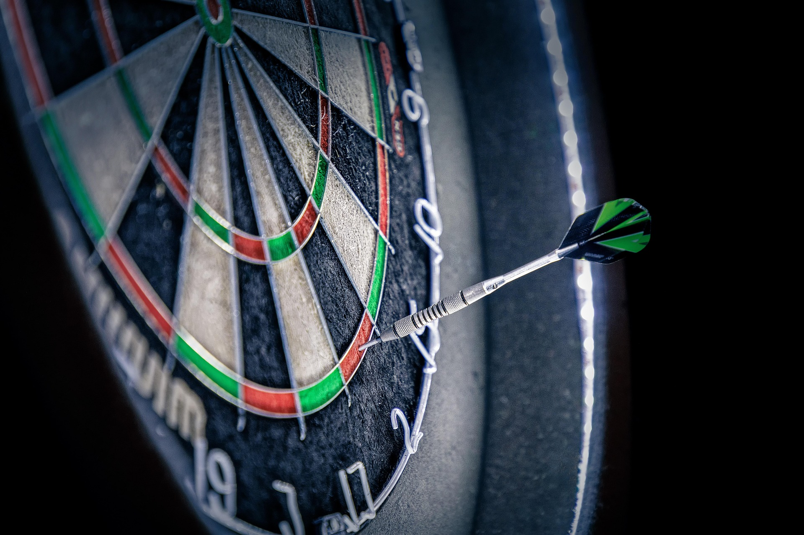

JR
Janis Roth
Founder & CEO
Darts player and software developer turning a personal project into a product built around real players.
Three friends combining software, computer vision and a genuine love for darts to make every match more meaningful.
We bring different perspectives to the same goal: a scoring experience that feels as focused as standing at the oche.
Founder & CEO
Darts player and software developer turning a personal project into a product built around real players.
CTO
Focused on computer vision and the technology that makes precise, intuitive scoring possible.
Lead Developer
Building a reliable product foundation and making sure every feature remains simple to use.

When Janis was looking for a new software project, he kept coming back to darts. Existing counters recorded scores, but rarely helped players understand what those scores meant. Nino and Patrick joined in, and count501 took shape.
Since then, the project has been guided by hands-on testing, constant iteration and one rule: technology should enhance the game without changing its character.
Accuracy matters—from every entered throw to every statistic we show.
Useful technology should help people see, understand and improve their game.
Darts is social. We build for friendly matches, ambitious practice and everything between.